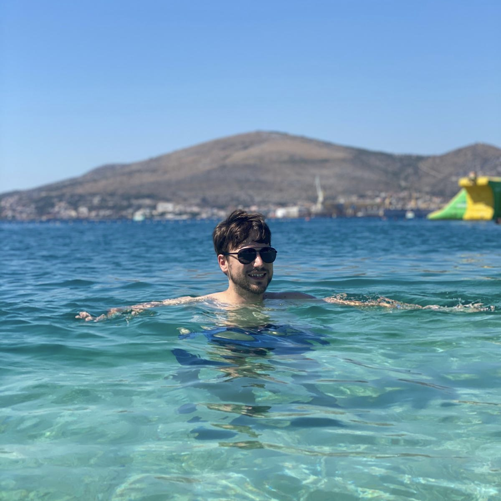

Personal Portfolio
About Me
 Welcome to my portfolio page! I'm Kris Ivan, current University of Birmingham full-stack web development coding bootcamp student (which is admittedly a mouthful). My passion for computers and Information Technology in general started at a young age and I have taken some extra classes in high school to learn about algorithm theory and coding with compiled languages, notably Turbo Pascal. Life came in the way afterwards though and I ended up graduating from the University of Brighton with a Business Management with Economics degree in 2018. Since then I have worked in project management and operational management in the utilities sector, however the Covid-19 pandemic has given a great chance to gain additional skills, so I've decided to re-train as a software engineer.
Currently I'm proficient in HTML and CSS, including the concept of accessibility and building responsive websites. By the end of the bootcamp however I'm expecting to know vanilla Javascript and the MERN stack in detail to tackle both front-end and back-end challenges. It will most definitely not be the end of the learning journey though as I would like to learn php and Python after graduation and I'm sure that new technologies and frameworks will be developed and implemented in the near future, so I'm also keen to keep up with best practices and workplace trends.
Among my hobbies, I'm an aspiring music producer with a small home studio (a bit too soon to look for my stuff on iTunes though, haha) and a craft beer afficionado, also brewing my own ales on the kitchen stove (they are better than they sound based on the set-up though, I promise). And having lived in 5 different countries, I'm always up for exploring new places and being exposed to different cultures. There is so much to see on this planet and so much to learn from each other!